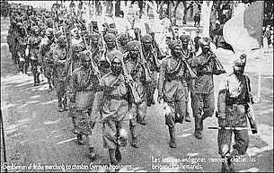
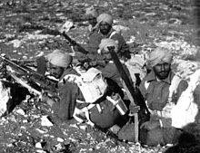
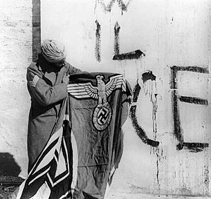
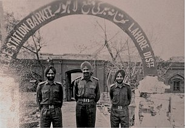
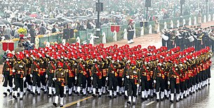

The Sikh Regiment is an infantry regiment of the Indian Army and holds the distinction of being the highest decorated regiment of the Indian Army. In 1979, the 1st battalion was recognized as the Commonwealth's most decorated battalion with 245 pre-independence and 82 post-independence gallantry awards, before being transformed into the 4th battalion, Mechanised Infantry Regiment. The regiment's first battalion was raised just before the partial annexation of the Sikh Empire on 1 August 1846, by the British East India Company. The Sikh Regimental Centre is currently located in Ramgarh Cantonment, Jharkhand, after previously being located in Meerut, Uttar Pradesh.
The modern Sikh Regiment is a direct continuation of the 11th Sikh Regiment of the British Indian Army. When transferred to the Indian Army, the numeral prefix was removed (in the case of the Sikh Regiment, 11) and additional battalions were raised, transferred, or disbanded as per the needs of the army. The regiment has grown from its humble beginnings of two battalions to a fraternity of 19 regular infantry and two reserve battalions. The 6th battalion now serves as the ceremonial battalion of the President's palace in India.
After the First Anglo-Sikh War (1845-1846), Sikhs residing in the Punjab region, which was under the rule of the Sikh Empire, were recruited into the Bengal Army of the British East India Company. The earliest Sikh units of the Bengal Army included the Regiment of Ferozepur (established in 1846) which later became the 14th King George's Own Ferozepur Sikhs, and the Regiment of Ludhiana (also established in 1846) which later became the 15th Ludhiana Sikhs. Following the Second Anglo-Sikh War (1848-1849), more Punjabis were recruited into the Bengal Army, forming regiments like the 1st Bengal Military Police Battalion, which later became the 45th Rattray's Sikhs. During the Indian Rebellion of 1857, Sikh units remained loyal to the British, in contrast to many regiments of the Bengal Army that mainly recruited from Bengal, Bihar, and Awadh, which mutinied against their British officers. After the rebellion, troops from Bihar and Awadh were recruited less, leading to the center of recruitment shifting to the Punjab and the North-West Frontier. Consequently, more Sikhs were recruited into the Bengal Army, and new Sikh regiments were raised such as the 36th Sikhs and 35th Sikhs, both established in 1887.
During campaigns in the North-West Frontier, 21 soldiers of the 36th Sikhs fought in the Battle of Saragarhi against 6,000-10,000 Pashtun tribesmen in 1897, which is considered one of history's greatest last stands by some military historians. In 1922, the Indian government reorganized the British Indian Army by combining single battalion regiments into multi-battalion regiments, leading to the formation of the 11th Sikh Regiment from the 14th King George's Own Ferozepur Sikhs, the 15th Ludhiana Sikhs, the 45th Rattray's Sikhs, the 36th Sikhs, the 47th Sikhs, and the 35th Sikhs. The 11th Sikh Regiment served during World War II, and after the partition of India, the regiment was allotted to the newly formed Indian Army, becoming the Sikh Regiment, the highest decorated regiment of the Indian Army.
Sikh regiments, while serving in the British Indian Army, participated in many wars across the globe. These include the Second Opium War in China, the Second Anglo-Afghan War, various campaigns on the North-West Frontier, the Western Front, Gallipoli and Mesopotamia campaigns of the First World War, the Third Anglo-Afghan War, and the North African, Italian and Burma campaigns of the Second World War. The Sikh regiments displayed great valour in these wars and were honoured with many gallantry awards and battle honours.
During the Indo-Pakistani War of 1947-1948, the 1st battalion of the Sikh Regiment was the first unit to be airlifted to Srinagar to assist in the defence of the Kashmir Valley against Pakistani irregular forces. Battalions of the Sikh Regiment also fought in the Sino-Indian War in 1962, the Indo-Pakistani wars of 1965 and 1971, and the Kargil War in 1999.
During the Indo-Pakistani War of 1971, the 6th Sikh Battalion bravely defended the strategically important town of Poonch in Jammu and Kashmir against a numerically superior Pakistani force, located hundreds of kilometers away from Bangladesh. This heroic stand by the battalion saved the politically significant town from being captured by the enemy. The battle lasted from December 3-6, 1971.
As India entered the war on December 3, 1971, Pakistan attacked on the Western front, with Pakistani brigades in Pakistan-Occupied Kashmir (PoK) comprising 5 Frontier Force Rifles, 7 POK Battalion, and 51 Punjab Regiment given the task of capturing two piquets and the helipad in Poonch, which were held by the 6 Sikh. The enemy assault began on the evening of December 3, but the 6 Sikh, with artillery support, held them off for three days, after which there was no major attack. The battalion suffered eight casualties and 33 were wounded. For their gallantry, the battalion won one Maha Vir Chakra (MVC) and five Vir Chakras, and the battle honour 'Defence of Poonch 1971.'
Maj. Gen. K.L. Rattan, then a Lt Col commanding 6 Sikh, was awarded the MVC for his exemplary leadership and gallantry. He had praised the cooperation between infantry and artillery in defending Poonch, stating that it was a "well-planned and well-mixed concrete." "Our artillery was truly a battle-winning factor," he said in the book 'Indian Gunners at War: The Western Front 1971,' written by Maj. Gen Jagjit Singh (retd).
The 6 Sikh Battalion also actively participated in Counter Insurgency (CI) operations and is the first battalion to be honored with 'The Chief of Army Staff Unit Citation' for its exemplary service to the nation.
The Battle of Tiger Hill refers to the series of conflicts that occurred in the vicinity of the peak of Tiger Hill between the Indian Army and Pakistan from the end of May to the second week of June in 1999, in the context of the Kargil War. The battle also involved a simultaneous struggle for the adjacent peak of Tooling, ultimately resulting in the victory of Indian forces in capturing Tiger Hill, Kargil.
Tiger Hill was occupied by units of the Pakistan Army's Northern Light Infantry. In late May 1999, the 8th Battalion, Sikh Regiment (8 Sikh), attempted to assault Tiger Hill but were repulsed by heavy small arms fire. Further assaults were poorly coordinated and initiated without adequate artillery support, resulting in failure under fire from an entrenched enemy. Unable to continue the attack, the soldiers dug in and surrounded the hill. In late June, the 192 Mountain Brigade assumed command of operations on Tiger Hill. The 18th Battalion, The Grenadiers (18 Grenadiers), which had recently participated in the victory at Tooling, were then assigned to the 192 Mountain Brigade.
The final assault on Tiger Hill began on July 3rd at 17:15. Twenty-two batteries from the Regiment of Artillery, including multi-barrelled rocket launchers, bombarded enemy positions on the peak for 13 continuous hours, providing covering fire for the infantry advancing up the mountain. The 2nd Battalion, Naga Regiment (2 Naga), advanced on the right flank and 8 Sikh advanced on the left. They used unexpected and therefore difficult avenues of approach, maintaining the element of surprise. Two hundred men from Alpha and Charlie Companies of 18 Grenadiers, along with the battalion's Ghatak platoon, advanced up the rear side of the mountain, a 1,000-foot vertical cliff which the Grenadiers climbed using fixed ropes in 12 hours, in freezing rain. They almost reached the top before the Pakistanis atop the peak spotted them and opened heavy fire, halting their attack. Sensing the loss of initiative, Maj. Ravinder Singh of 8 Sikh launched a daring attack. He and a detachment of 200 soldiers climbed up the side of the adjoining Western Ridge, splitting the Pakistani defense on the night of July 5th. The group held off several counterattacks. Most of the Sikh soldiers attacked without cold weather gear, and many of the wounded died from exposure. After three more days of heavy fighting, the bold plan paid off, and 18 Grenadiers resumed the attack on the invaders from two directions. On the morning of July 8th, 18 Grenadiers seized the 16,700-foot (5,062 m) Tiger Hill Top.
Gren. Yogendra Singh Yadav of 18 Grenadiers was awarded the highest military honour of the Republic of India, the Param Vir Chakra, for his actions during the battle. Overall, Yadav suffered 12 bullet wounds and played a major role in the capture of Tiger Hill.
Brigadier Kuldip Singh Chandpuri is highly renowned for his exceptional courage and valor during the Indo-Pakistani war of 1971. At that time, he was a Major in the Indian Army and was associated with the 23rd battalion of the Punjab Regiment.
BATTLE HONOURS
Pre-Independence
• Lucknow 1857-58, 1 Sikh
• Arrah 1857, 3 Sikh
• Bihar 1857, 3 Sikh
• China 1860-62, 2 Sikh
• Ali Masjid 1878, 1 & 3 Sikh
• Ahmed Khel 1880, 2 Sikh
• Afghanistan 1878-79, 1 Sikh
• Afghanistan 1878-80, 2 & 3 Sikh
• Kandahar 1880, 2 Sikh
• Suakin 1885, 2 Sikh
• Tofrek 1885, 2 Sikh
• Manipur 1891, 4 Sikh
• Chitral 1895, 1 & 2 Sikh
• Samana 1897, 4 Sikh
• Saragarhi/Gulistan 1897, 36 Sikh
• Punjab Frontier 1897, 2, 3, 4 & 35 Sikh (SRC)
• Malakand 1897, 3 & 35 Sikh (SRC)
• Tirah 1897-98, 2 & 4 Sikh
• China 1900, 1 Sikh
• North-West Frontier 1908, 3 Sikh

World War I
• La Bassée 1914, 2 & 5 Sikh
• St-Julien 1914, 2 & 5 Sikh
• Armentières 1914-15, 5 Sikh
• Auber 1914, 2 & 5 Sikh
• Givens 1914, 4 Sikh
• Tsingtao 1914, 4 & 5 Sikh
• Neuve Chapelle 1914-15, 2, 3 & 5 Sikh
• France and Flanders 1914-15, 2 & 5 Sikh
• Suez Canal 1914-15, 1 Sikh
• Festubert 1915, 2 Sikh
• Tigris 1916, 3 & 5 Sikh
• Pyres 1915, 2 & 4 Sikh
• Sari Bair 1915, 1 Sikh
• Helles 1915, 1 Sikh
• Krishna 1915, 1 Sikh
• Suva 1915, 1 Sikh
• Gallipoli 1915, 1 Sikh
• Egypt 1915, 1 Sikh
• Mesopotamia 1916-18, 1, 3 & 4 Sikh
• Sharon 1918, 2 & 5 Sikh
• Palestine 1918, 5 Sikh
• Baghdad 1916-18, 5 Sikh
• Kut 1917, 1, 3 & 5 Sikh
• Hai 1917, 3 & 4 Sikh
• Megiddo 1918, 5 Sikh
• Persia 1918, 4 Sikh
• Egypt 1918, 2 & 3 Sikh
Inter-War years
• North-West Frontier 1918-19, 5 Sikh
• Afghanistan 1919, 2 Sikh
• Palestine 1921, 5 Sikh
Second World War

• Agordat 1940-41, 4 Sikh
• Keren 1941, 4 Sikh
• El Alamein 1940-43, 4 Sikh
• Omars 1941, 4 Sikh
• Kuantan 1941-42, 5 Sikh
• Niyor Kluang 1941-42, 5 Sikh
• Mersa Matruh 1941-42, 2 Sikh
• Kota Bharu 1942, 5 Sikh
• North Arakan 1942-45, 1 Sikh
• Buthidaung 1942-45, 1 Sikh
• Coriano 1943-45, 2 Sikh
• San Marino 1943-45, 2 Sikh
• Poggio San Giovanni 1943-45, 2 Sikh
• Monte Calvo 1943-45, 4 Sikh
• Kangla Tongbi 1944, 1 Sikh
• Gothic Line 1943-45, 4 Sikh
• Nyaung U Bridgehead 1945, 1 Sikh
• Irrawaddy River 1945, 1
• Shandatgyi 1945, 1 Sikh
• Kama 1945, 1 Sikh
• Sittang 1945, 1 Sikh

Post-Independence
• Srinagar 1947, 1 Sikh
• Tithwal 1948, 1 Sikh
• Raja Picquet 1965, 2 Sikh
• Burki 1965, 4 Sikh
• Op Hill 1965, 7 Sikh
• Siramani 1971, 4 Sikh
• Poonch 1971, 6 Sikh
• Purbat Ali 1971, 10 Sikh
• Tiger Hill 1999, 8 Sikh
Theatre honours
Pre-Independence
• North Africa 1940-43, 2 & 4 Sikh
• Abyssinia 1940-41, 4 Sikh
• Iraq 1941, 3 Sikh
• North Africa 1941-42, 3 Sikh
• Malaya 1941-42, 5 Sikh
• Burma 1942-45, 1 Sikh
• Italy 1943-45, 2 & 4 Sikh
• Greece 1944-45, 2 Sikh
Post-Independence

• Jammu & Kashmir 1947-48, 1, 5, 7 & 16 Sikh
• Jammu & Kashmir 1965, 2, 3 & 7 Sikh
• Punjab 1965, 4 Sikh
• Sindh 1971, 10 Sikh
• Punjab 1971, 2 Sikh
• East Pakistan 1971, 4 Sikh
• Jammu & Kashmir 1971, 5 & 6 Sikh
• Kargil 1999, 8 Sikh
After the Indian Army carried out Operation Blue Star, which involved storming the Golden Temple in 1984, around 5,000 Sikh soldiers, including some from the Sikh Regiment, staged a mutiny. As a result of the mutiny, a significant number of troops from the Sikh Regiment's 9th battalion were involved and the battalion was subsequently disbanded.
The museum of the Sikh Regimental Centre displays a record of the Sikh Regiment in four halls viz.,
• The Religious/Motivational Hall
• The Hall of Heritage
• The Regimental Glory Hall
• The Peripheral Gallery
In all, the regiment has to its credit 1652 gallantry awards and honours including:
• 2 Param Vir Chakras
• 8 Maha Vir Chakras
• 64 Vir Chakras
• 4 Ashoka Chakras
• 14 Victoria Crosses
• 21 Indian Order of Merits
In addition it has also earned:
• 75 battle honours
• 38 theatre honours besides five COAS Unit Citations
21 soldiers of the 36th Sikhs were posthumously awarded the Indian Order of Merit for their actions in the Battle of Saragarhi in 1897:
• Hav. Ishar Singh
• Nk. Lal Singh
• L/Nk. Chanda Singh
• Sep. Sundar Singh
• Sep. Ram Singh
• Sep. Uttar Singh
• Sep. Sahib Singh
• Sep. Hira Singh
• Sep. Daya
• Sep. Jivan Singh
• Sep. Bhola Singh
• Sep. Narayan Singh
• Sep. Gurmukh Singh
• Sep. Jivan Singh
• Sep. Gurmukh Singh
• Sep. Ram Singh
• Sep. Bhagwan Singh
• Sep. Bhagwan Singh
• Sep. Buta Singh
• Sep. Jivan Singh
• Sep. Nand Singh
Victoria Cross
• Nk. Gian Singh, 11th Sikh Regiment (while serving in 15th Punjab Regiment)
• Nk. Nand Singh, 11th Sikh Regiment
Param Vir Chakra
• Lance Naik Karam Singh, 1 Sikh Regiment
• Subedar Joginder Singh, 1 Sikh Regiment
Ashok Chakra
• Subedar Surinder Singh
• Havildar Bachittar Singh
• Havildar Joginder Singh

Maha Vir Chakra
• Major Ajit Singh
• Sub. Ajit Singh
• Sep. Amar Singh
• Brigadier Joginder Singh Bakshi
• Major Amarjit Singh Bal
• Lieutenant Colonel Inderbal Singh Bawa
• Sub. Nand Singh
• Lieutenant Colonel Dewan Ranjit Rai
• Shanghara Singh
Vir Chakra
• Lieutenant General Harbaksh Singh
• Subedar Nirmal Singh (Posthumously)
• Subedar Karnail Singh (Posthumously)
• Sepoy Satpal Singh
• 2nd Lieutenant R S Nagar (16 Sikh Regiment)
• L/Nk Mohinder Singh (16 Sikh Regt)
Padma Vibhushan
• Lieutenant General Harbaksh Singh
Padma Bhushan
• Lieutenant General Harbaksh Singh
Padma Shri
• Subedar Kaur Singh (10 Sikh) Boxing